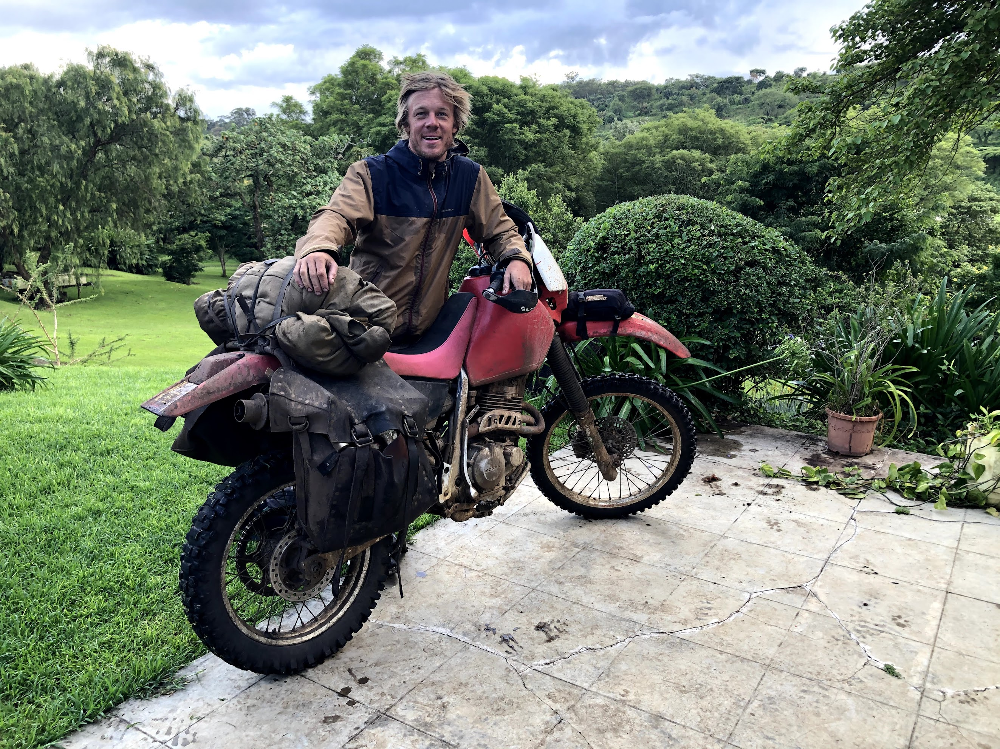
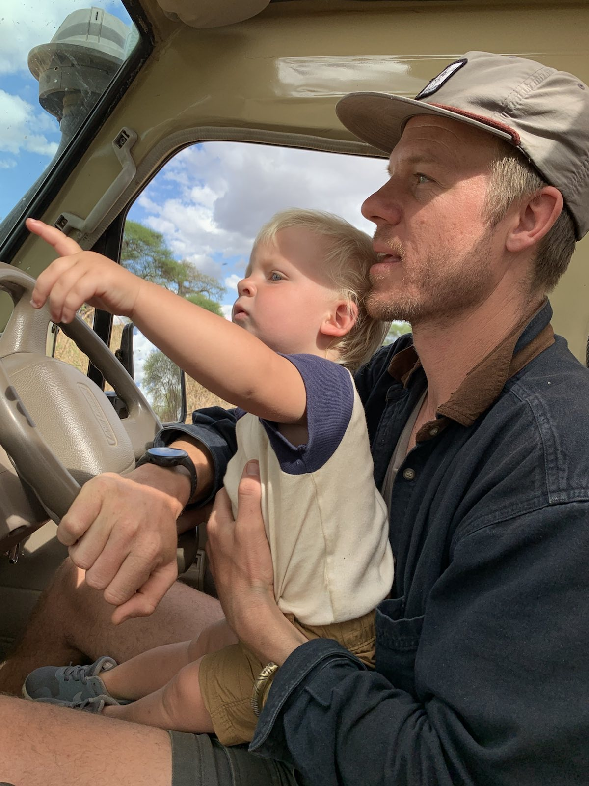
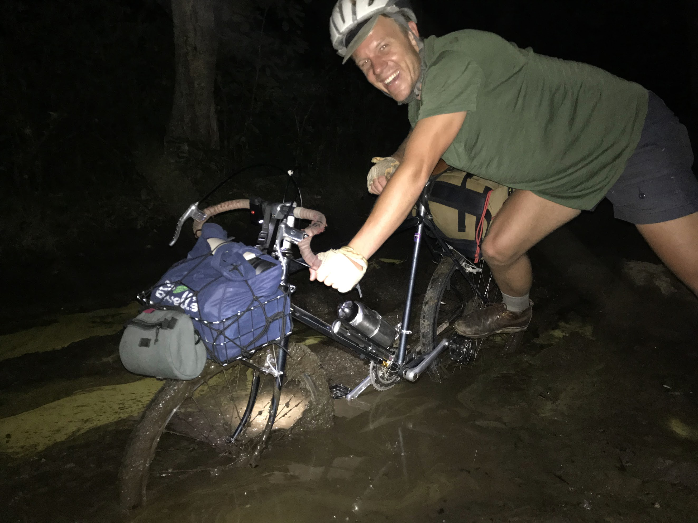

Co-Founder · Expedition Designer
Trevor
Borden.
Where Jesse accumulated credentials and a scientific framework for understanding the landscape, Trevor accumulated something harder to put on a CV: deep operational judgment, a network of guides and community relationships in northern Tanzania built over years of showing up, and a quiet obsession with making complex things work seamlessly on the ground.
He holds a BA in Social Sciences, but the real training has been on the ground: the better part of two decades learning how East Africa actually functions — not as a tourist, not as a researcher, but as someone whose family put down roots there before he was old enough to understand what that meant. He has bikepacked across Europe and Mexico, motorcycled across much of East Africa, and backpacked through the Rift Valley. He knows which operators to trust and why. He knows the camps that hold in the dry season and the routes that close in the wet one.
He's the first one up every morning and the last to stop working. He doesn't need the credit. He just needs the trip to be right.


Crossing East Africa
At home in Tanzania
Bikepacking in the field